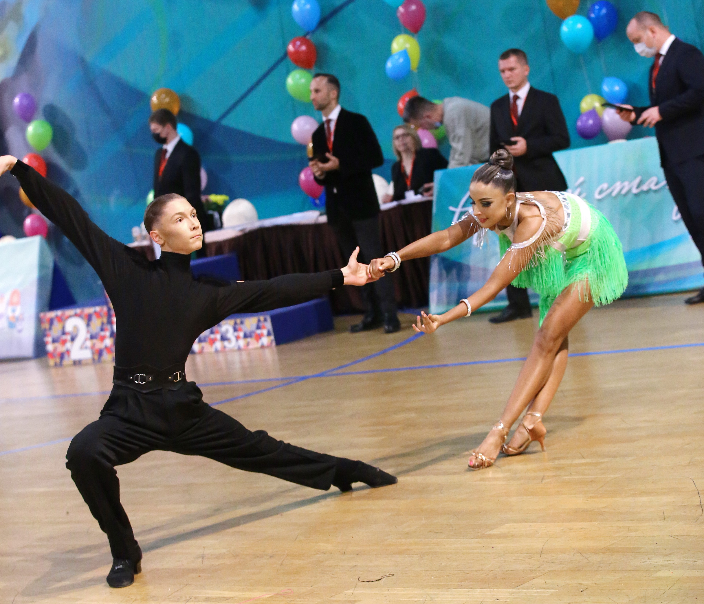
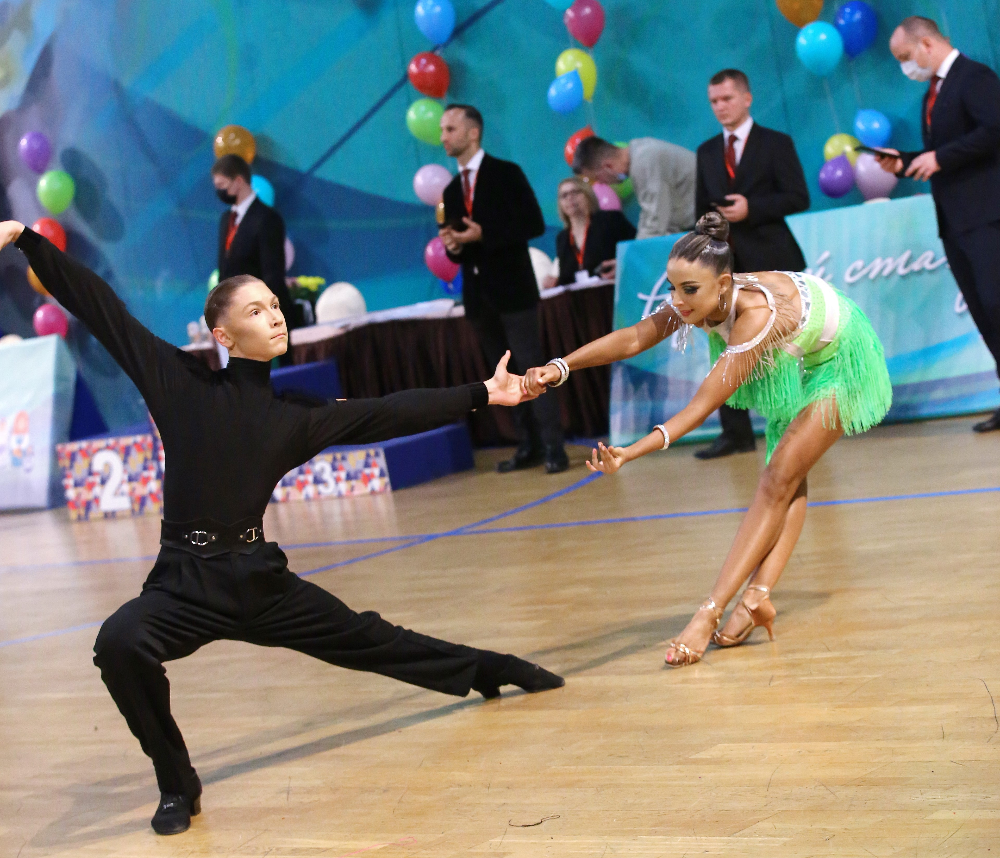

О нас
Танцевально-спортивный клуб Форум был основан в 2017 году выдающимися танцорами тренерами, чемпионами мира, чемпионами Европы, многократными финалистами и победителями чемпионата России Антоном Алдаевым и Натальей Полухиной. За 5 лет из одного зала Форум вырос до целой сети филиалов во всех районах города Ростова-на-Дону и других городах области. Тренерский состав создает комфортные условия для занятий и находит индивидуальный подход к каждому спортсмену в рамках выстроенной системы тренировок. Группы делятся на детей от 3-х лет, спортсменов и взрослых начинающих (соло латина). Благодаря этому разделению, наш клуб открыт для танцоров любого возраста и уровня. Также, одной из наших основных целей является продвижение спортивных бальных танцев, как вида искусства. Культура движения прививает человеку пластику и элегантность, а мир танца наполняет энергетикой и одухотворённостью. Войдя в эти двери один раз, невозможно не захотеть вернуться. Наша задача лишь помочь открыть для себя эту особую жизнь!
 
